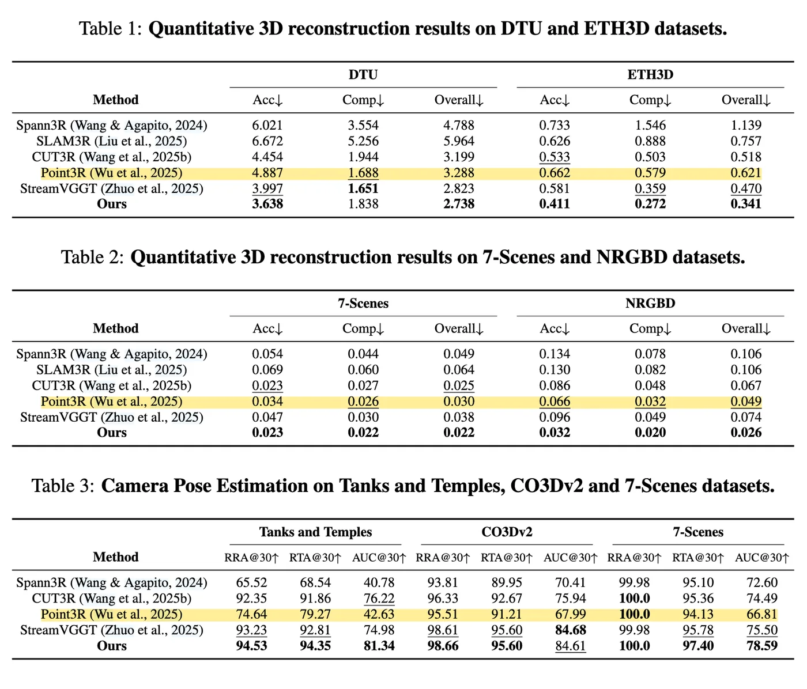
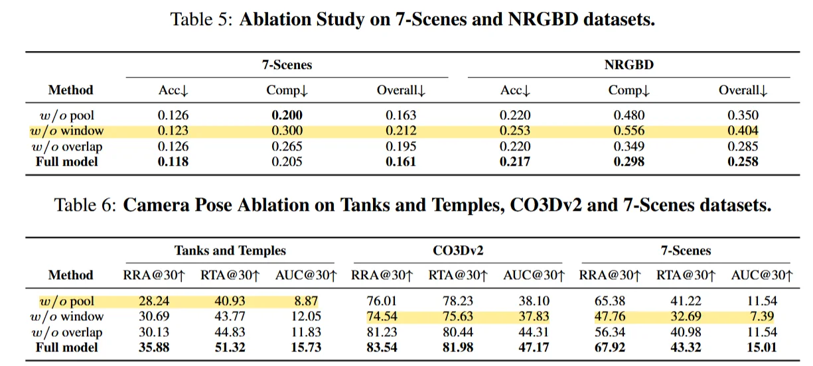

滑窗的想法，重叠长度为半个窗口。生成紧凑的 camera token 作为历史帧的全局信息，方便后续帧的来了解全局内容。
DUSt3R follow-up work；
全局相机的配准由压缩的 camera token 主导，image token 只负责稠密几何的估计。
Method
window 内的所有 camera 和 image token 挂到一起进入 decoder，滑动窗口大小为4，步长为2。decoder 输出 global、local 的两套 token，还有更新后的 state token。再经过双分支的 decoder （pose / state）输出state 和 image token + camera token。后者再进入到 multi-head 中输出 pointmap。
对于 camera token （pose）本文没有直接用 token 经过 camera head，而是先把 global 和 local 的 camera token 拼接在一起，再写入历史 camera token 池，位姿由 camera head 结合当前窗口的 token 与 camera token pool 一起来预测。
window 的设计让 WinT3R 恢复了相邻帧之间的直接信息交互，它认为 CUT3R 这种只通过 state 来间接读取历史信息的方法把相邻帧之间很强的局部几何相关性被压缩得太过了，会造成局部结构质量不好。window 外的历史通过紧凑的 state 表示来进行信息交互，配合 window 内的密集信息交互，兼顾效率与精度。
系统有三层信息存储：
- 当前窗口内的高分辨率图像 token，负责局部几何；
- state tokens 负责窗口外的上下文；
- camera token 负责长时序的全局位姿信息；
推理流程：
- 新帧到达，逐帧编码成 \(F_i\) \(\to\)
- 窗口不满的时候等待下一帧 \(\to\)
- 窗口已满，窗口内图像联合编码 \(\to\)
- 由 image token 预测 pointmap 和 temp camera token 并得到 new state \(\to\)
- 由 预测得到的 camera token 和 camera token pool 交互得到 new camera tokens \(\to\)
- new camera tokens 写回 camera token pool \(\to\)
- 窗口滑动一个 step \(\to\)
- 对于重叠去保留更新后的 pose。pointmap 选择置信度高的一版 \(\to\)
- 序列末尾如果窗口不够，那就复制补齐，做一次 window 处理 。
性能提升原因：（1）恢复了相邻帧之间直接的信息交互，这个对弱结构/低纹理很有用；（2）camera token pool 是用一个 latent state 来承载全局的 camera 配准约束；（3）把 camera token 和 image token 分开了，专人专事，几何估计和位姿估计不互相打架。
==对于重建几何的质量，主要是从窗口内的几帧的直接交互来得到的，而对于长序列or streaming 的情况，他就需要使用 camera token pool 来约束相机的位姿，这样保证它轨迹不出错。这样的话：局部几何也ok，长期的pose也不至于漂移很严重。是一种很折中的方法。==
Results
从 DUSt3R 初始化，750 million parameters，2 stages
(1)64 A800 GPUs / 7 days； (2) 32 A800 GPUs / 4 days
window 提升重建质量，camera pool 提升 pose 稳定性

